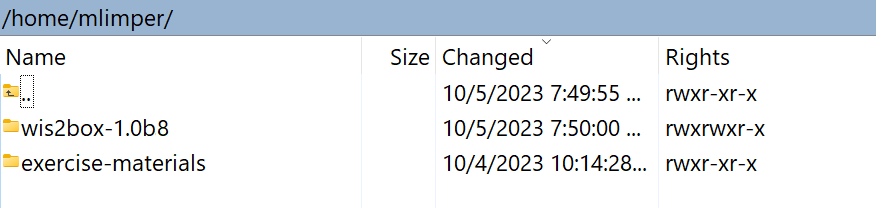

Acessando sua VM de estudante
Resultados de aprendizado
Ao final desta sessão prática, você será capaz de:
- acessar sua VM de estudante via SSH e WinSCP
- verificar se o software necessário para os exercícios práticos está instalado
- verificar se você tem acesso aos materiais de exercício para este treinamento na sua VM de estudante local
Introdução
Como parte das sessões de treinamento locais do wis2box, você pode acessar sua VM de estudante pessoal na rede de treinamento local chamada "WIS2-training".
Sua VM de estudante tem o seguinte software pré-instalado:
- Ubuntu 22.0.4.3 LTS ubuntu-22.04.3-live-server-amd64.iso
- Python 3.10.12
- Docker 24.0.6
- Docker Compose 2.21.0
- Editores de texto: vim, nano
Note
Se você deseja realizar este treinamento fora de uma sessão de treinamento local, você pode fornecer sua própria instância usando qualquer provedor de nuvem, por exemplo:
- Instância VM GCP (Google Cloud Platform)
e2-medium - Instância ec2 AWS (Amazon Web Services)
t3a.medium - Máquina Virtual Azure (Microsoft)
standard_b2s
Selecione Ubuntu Server 22.0.4 LTS como sistema operacional.
Após criar sua VM, certifique-se de ter instalado python, docker e docker compose, conforme descrito em wis2box-software-dependencies.
O arquivo de lançamento do wis2box usado neste treinamento pode ser baixado da seguinte forma:
wget https://github.com/World-Meteorological-Organization/wis2box-release/releases/download/1.0.0/wis2box-setup.zip
unzip wis2box-setup.zip
Você sempre pode encontrar o arquivo 'wis2box-setup' mais recente em https://github.com/World-Meteorological-Organization/wis2box/releases.
O material de exercício usado neste treinamento pode ser baixado da seguinte forma:
wget https://training.wis2box.wis.wmo.int/exercise-materials.zip
unzip exercise-materials.zip
Os seguintes pacotes adicionais de Python são necessários para executar os materiais de exercício:
pip3 install minio
pip3 install pywiscat==0.2.2
Se você estiver usando a VM de estudante fornecida durante as sessões locais de treinamento WIS2, o software necessário já estará instalado.
Conecte-se à sua VM de estudante na rede de treinamento local
Conecte seu PC à rede Wi-Fi local transmitida na sala durante o treinamento WIS2 conforme as instruções fornecidas pelo instrutor.
Use um cliente SSH para se conectar à sua VM de estudante usando o seguinte:
- Host: (fornecido durante o treinamento presencial)
- Porta: 22
- Usuário: (fornecido durante o treinamento presencial)
- Senha: (fornecido durante o treinamento presencial)
Tip
Contate um instrutor se você estiver incerto sobre o hostname/usuário ou tiver problemas para conectar.
Uma vez conectado, por favor, altere sua senha para garantir que outros não possam acessar sua VM:
limper@student-vm:~$ passwd
Changing password for testuser.
Current password:
New password:
Retype new password:
passwd: password updated successfully
Verifique as versões do software
Para poder executar o wis2box, a VM de estudante deve ter Python, Docker e Docker Compose pré-instalados.
Verifique a versão do Python:
python3 --version
Python 3.10.12
Verifique a versão do docker:
docker --version
Docker version 24.0.6, build ed223bc
Verifique a versão do Docker Compose:
docker compose version
Docker Compose version v2.21.0
Para garantir que seu usuário possa executar comandos Docker, seu usuário foi adicionado ao grupo docker.
Para testar que seu usuário pode executar docker hello-world, execute o seguinte comando:
docker run hello-world
Isso deve baixar a imagem hello-world e executar um contêiner que imprime uma mensagem.
Verifique se você vê o seguinte na saída:
...
Hello from Docker!
This message shows that your installation appears to be working correctly.
...
Inspecione os materiais de exercício
Inspecione o conteúdo do seu diretório pessoal; estes são os materiais usados como parte do treinamento e das sessões práticas.
ls ~/
exercise-materials wis2box
Se você tiver o WinSCP instalado no seu PC local, você pode usá-lo para conectar à sua VM de estudante e inspecionar o conteúdo do seu diretório pessoal e baixar ou subir arquivos entre sua VM e seu PC local.
O WinSCP não é necessário para o treinamento, mas pode ser útil se você quiser editar arquivos na sua VM usando um editor de texto no seu PC local.
Aqui está como você pode conectar à sua VM de estudante usando o WinSCP:
Abra o WinSCP e clique em "Novo Site". Você pode criar uma nova conexão SCP para sua VM da seguinte forma:

Clique em 'Salvar' e depois em 'Login' para conectar à sua VM.
E você deverá ser capaz de ver o seguinte conteúdo:

Conclusão
Parabéns!
Nesta sessão prática, você aprendeu como:
- acessar sua VM de estudante via SSH e WinSCP
- verificar se o software necessário para os exercícios práticos está instalado
- verificar se você tem acesso aos materiais de exercício para este treinamento na sua VM de estudante local